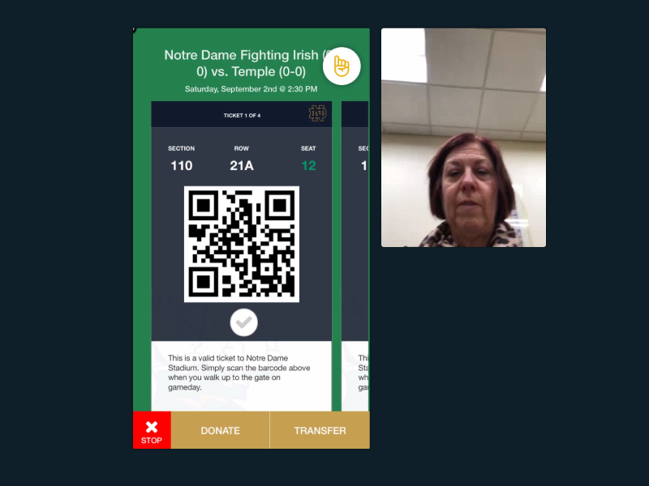
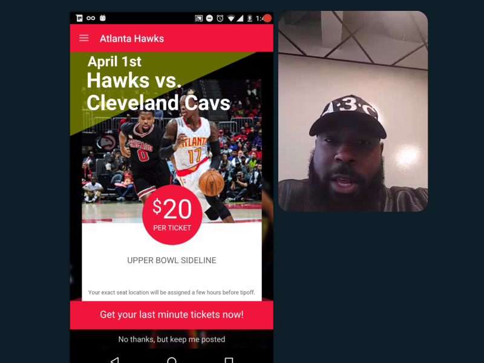

Design solutions rooted in a deep understanding of the customers for live event providers including the NBA, NHL, NFL, MLB and NCAA. I led or co-led design strategy, UX design, prototyping, live test moderation, and Ui system design for all projects below.
Sep. 2017 – My Notre Dame Tickets
Notre Dame came to us for its first-ever digital ticketing product. We built iOS and Android apps for fans both to scan tickets on gameday and easily share tickets with others. I led the 7 month project from user experience architecture through to visual design and development, including live usertesting with real customers
WATCH THE TEST  Live for iOS Live for AndroidMay. 2016 – Mobile Ticket Sales Landing View
We built technology for NBA, NHL, NFL, MLB, NCAA and Concert partners to sell tickets via mobile. The flexible technology allowed teams to customize offers, so we tested a theory that a landing page view before the select-your-tickets view would improve the user experience. The landing page view tested well and this technology has sold over $4 million in tickets since its launch.
WATCH THE TEST  Learn more here[* USER SCROLLIN' *]